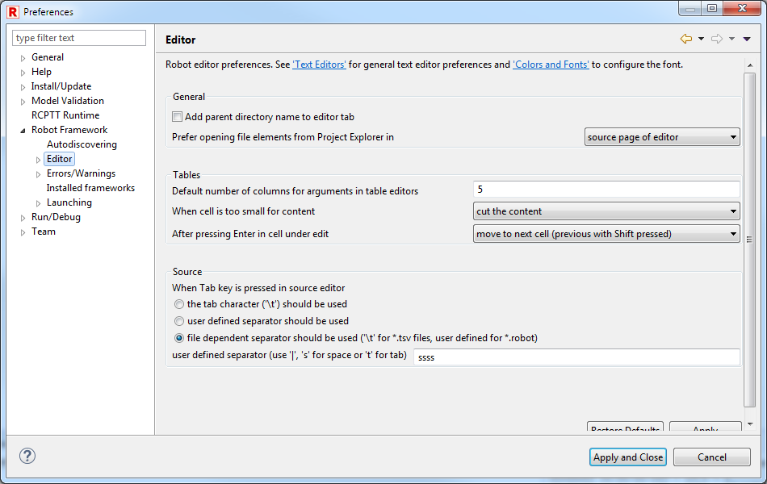
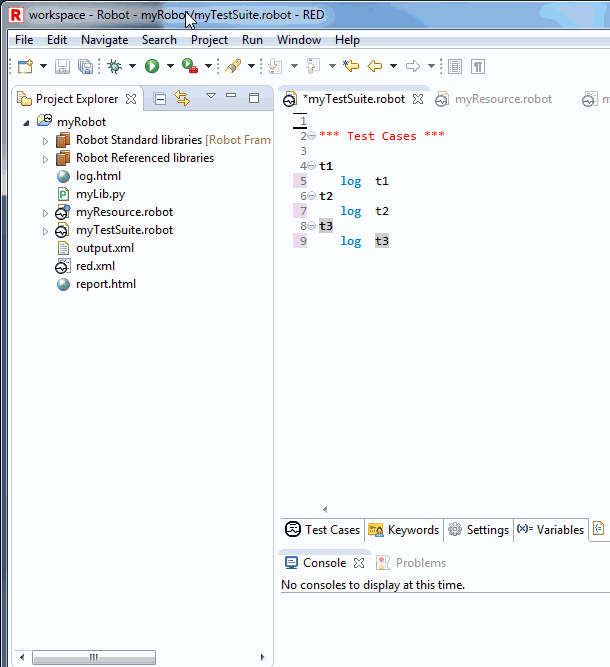

General usage hints
Tab key behavior
Tab key press behavior is set by default to be aware of the file type. For .tsv files each Tab will produce item separator, for text files 4 spaces will generated.
In Robot Framework preferences (Window -> Preferences under Source section), Tab behavior can be changed if needed.

Validating & revalidating whole project/workspace
Validation of test case is triggered by any user actions, it is also done during files&project imports.
Whenever there is a change in multiple files (for instance find&replace) or big file import/deletion, it is good to force revalidation of project.
It is done accessing option Project -> Clean ...

At the bottom right of RED, progress bar will appear with the status of validation.
Automatic source formatting CTRL+SHIFT+F
Formatting source is Eclipse based mechanism which provides code formatting with arbitrary ruleset.
For now, code formatting in RED is meant to be proof of functionality, it is not configurable.
In near future we will provide a way to include custom rule sets for code formatting and check style.
It is invoked by right click menu in Source editor.

Quick Fix - Ctrl+1
Quick Fix is an Eclipse mechanism to provide user with predefined action for solving issues.
If the Quick Fix action is available, light bulb icon is shown next to line number.

Quick Fix can be accessed by clicking on underlined item and choosing from right click menu Quick Fix or directly by Ctrl+1.
Running selected test case
RED can run or debug one, selected testcase. This can be achieved by altering Run Configuration :

and also by placing cursor on testcase body and using right click menu:
